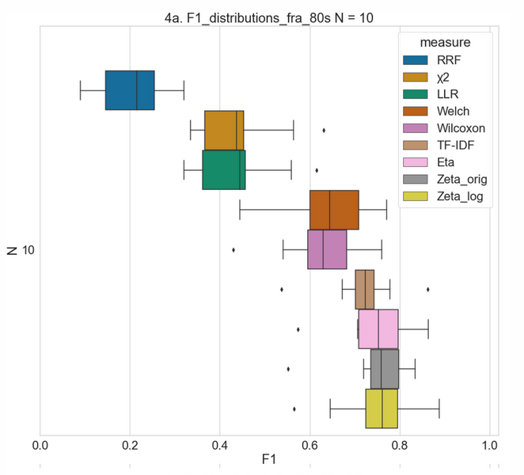
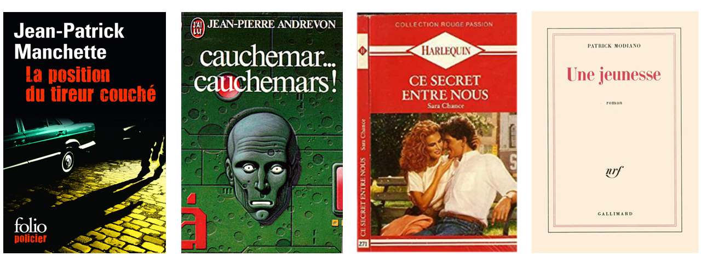
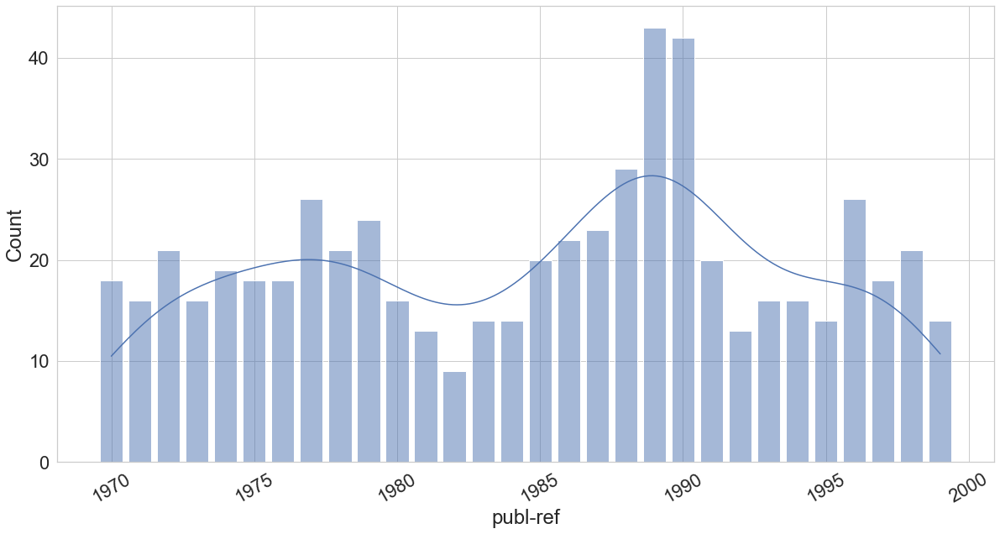
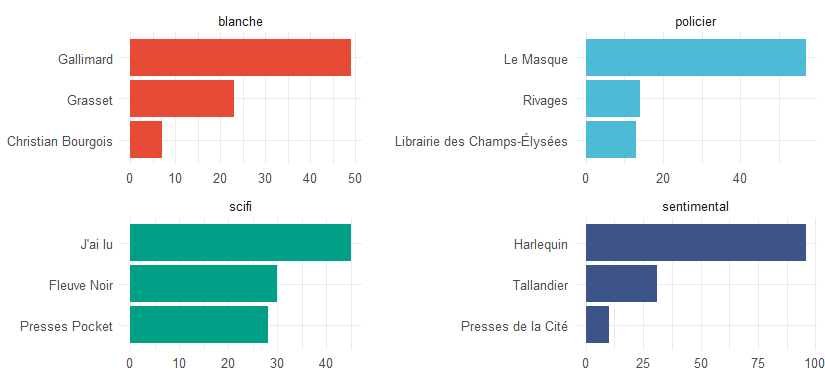
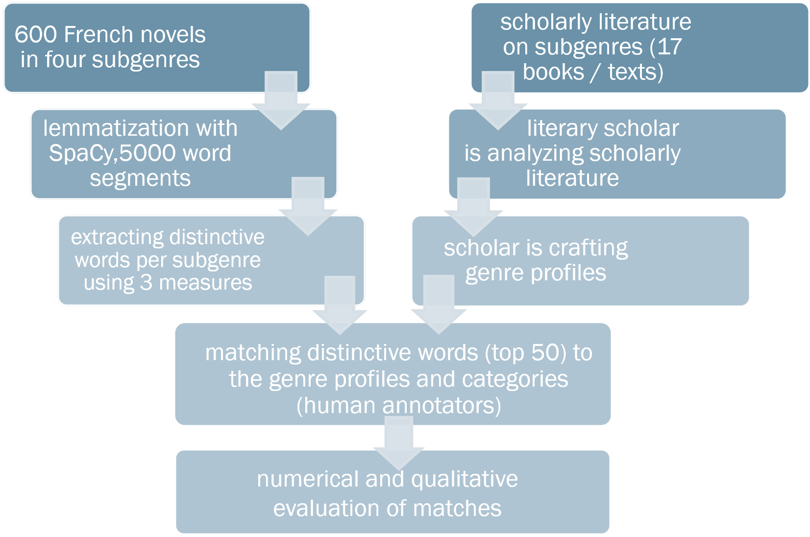
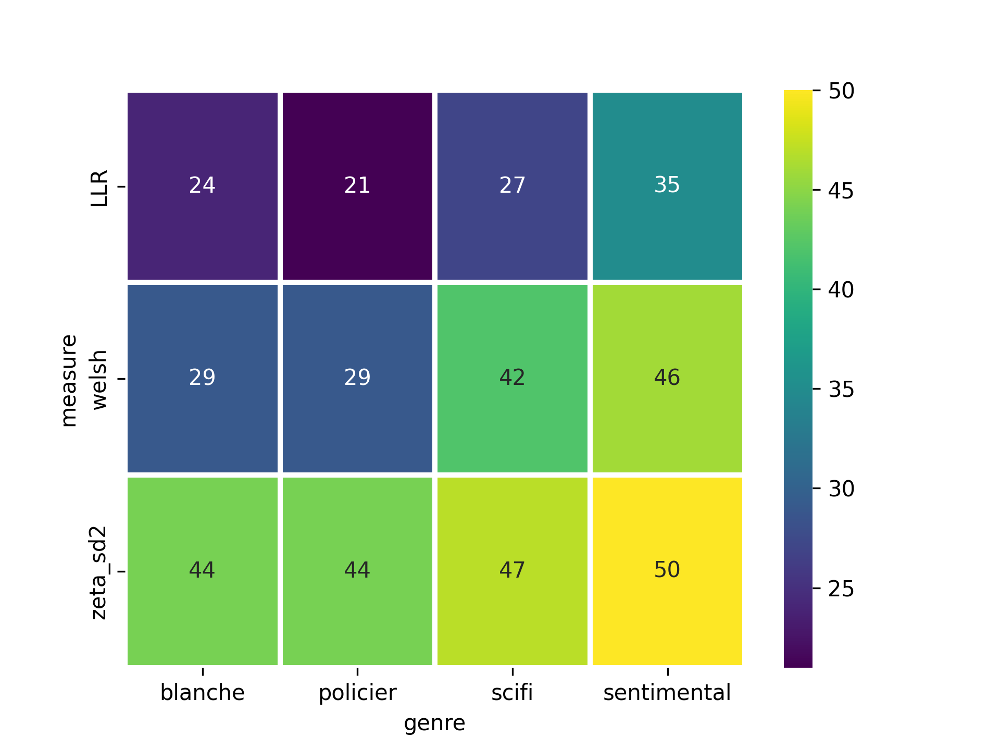

Qualitative Genre-Profile und distinktive Wörter
Eine Studie zu Keyness in Subgenres des französischen Romans
J. Röttgermann ![]()
Trier Center for Digital Humanities
K. Du
Trier Center for Digital Humanities
C. Schöch
Trier Center for Digital Humanities
2025-05-03
Einleitung
La différence n’est pensée que dans le jeu comparé de deux similitudes.”
— (Gilles Deleuze, Différence et répétition, 1968)
Distinktivitätsmaße
Hintergrund: Evaluationsstudie
Du / Dudar / Schöch (2022)
Verwendete Distinktivitätsmaße
Korpus
 Je 50 Romane: 4 x 3 x 50 = 600 Romane
Datenstruktur
- Zeitraum: 1970–1999
- Umfang: 600 Romane, 33 Millionen Tokens
Verlage
Ziel: Interpretierbarkeit
- Vergleich eines Subgenres (150 Romane) mit allen anderen (450 Romane).
- Lemmatisierung mit SpaCy.
- Python-Paket
pydistinto(Du / Dudar / Schöch (2021)) zur Berechnung von Zeta, Welch und LLR. - Ergebnislisten: Top 50 distinktive Wörter pro Subgenre.
- Matching mit qualitativen Subgenre-Profilen.
Methode
Subgenre-Profile
- thematic Concepts (bspw.: Technologie)
- Language Patterns (bspw.: Neologismen)
- Main Characters (bspw.: Wissenschaftler:in)
- Space / Setting (bspw.: Weltraum)
- Tonality (bspw.: schwarzer Humor)
- Narrative form (bspw.: Introspektion )
- Narrative structure (bspw.: Reise eines Einzelgängers)
- Language patterns:“Language patterns one can observe in this genre are neologisms, technical vocabulary and intertextual references, often making explicit references to older works of popular literature.”
Matching
| Genre-Profil | Zeta | LLR | Welch |
|---|---|---|---|
| French detective fiction is characterized by sociolect, informal register and direct speech. | flic, foutre, type, gars, mec, con, truc, merde, hein, copain, boulot, gueule, môme | dire, flic, mec | flic, dire, oui, foutre, type, con, truc, merde, ah |
| 13/50 | 3/50 | 9/50 |
Ergebnisse
Anzahl der ‘matching keywords’ (nach Maß und Subgenre)
Unexpected bei ‘literary fiction’
| Zeta (6/50) | LLR (26/50) | Welch (21/50) |
|---|---|---|
| horse, flower, bird, everyone, among, rose | rhada, the, their, oneself, of, mr, which, lalla, he, isambour, not, as, have, ludo, djafar, prisko, camier, by, mercier, planet, vito, fintan, khan, their, but, daquin, where | who, like, where, by, whose, every, at, the, of, in, big, that, more, even, everyone, their, bottom, or, there, nor |
| cheval, fleur, oiseau, chacun, parmi, rose | rhada, le, lui, se, de, mr, qui, lalla, il, isambour, pas, comme, ludo, djafar, prisko, camier, par, mercier, planète, vito, fintan, khan, leur, mais, daquin, où | qui, comme, où, par, dont, chaque, au, le, de, dans, grand, celui, plus, même, chacun, leur, fond, ou, là, ni |
Fazit
- Zeta und Welch haben eine bessere Performance als LLR (= hoher Anteil an Keywords, die auf die Profile gemappt werden können)
- Zeta und Welch zeigen eine gewisse Überlappung von Keywords (laut Jaccard Similarity 0.43 im Durchschnitt der Subgenres)
- Je besser ein Maß funktioniert, in der Perspektive der qualitativen Evaluation, desto weniger überraschend sind die Ergebnisse (wir finden was wir suchen)
- Tiere/Pflanzen [‘Pferd’, ‘Vogel’, ‘Blüte’] sind distinktiv für Hochliteratur kontrastiert mit Science-Fiction / Kriminalroman / sentimentaler Roman.
Vielen Dank für die Aufmerksamkeit!
Ressourcen
- Korpus and Metadaten
- https://github.com/Zeta-and-Company/dtf600
- DOI: 10.5281/zenodo.10853581
- Code und Forschungsdaten
- https://github.com/Zeta-and-Company/expertise-statistics
- DOI: 10.5281/zenodo.10853663
- Pydistinto
- https://github.com/Zeta-and-Company/pydistinto
- DOI: 10.5281/zenodo.6517683
Bibliographie
Burrows, John (2007): "All the Way Through: Testing for Authorship in Different Frequency Strata", in: Literary and Linguistic Computing 22 (1): 27–47. 10.1093/llc/fqi067.
Du, Keli / Dudar, Julia / Schöch, Christof (2021): Pydistinto - a Python implementation of different measures of distinctiveness for contrastive text analysis. Zenodo. https://zenodo.org/record/5245096 [letzter Zugriff February 3, 2025].
Du, Keli / Dudar, Julia / Schöch, Christof (2022): "Evaluation of measures of distinctiveness: Classification of literary texts on the basis of distinctive words", in: Journal of Computational Literary Studies 1 (1): 10.48694/JCLS.102.
Dunning, Ted (1993): "Accurate Methods for the Statistics of Surprise and Coincidence", in: Computational Linguistics 19 (1): 14.
Schöch, Christof / Schlör, Daniel / Zehe, Albin / Gebhard, Henning / Becker, Martin / Hotho, Andreas (2018): Burrows’ Zeta: Exploring and Evaluating Variants and Parameters. in: Book of Abstracts of the Digital Humanities Conference. Mexico City: ADHO. https://dh2018.adho.org/burrows-zeta-exploring-and-evaluating-variants-and-parameters/.
Welch, Bernard Lewis (1947): "The generalization of Student’s problem when several different population variances are involved", in: Biometrika 34 (1-2): 28–35. 10.1093/biomet/34.1-2.28.

https://github.com/Zeta-and-Company/expertise-statistics